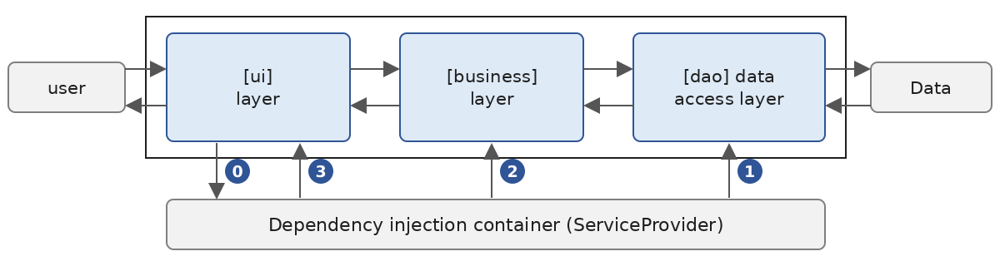

6. 分层架构
6.1. 简介
让我们回顾税款计算应用程序的最新版本（版本 3，上一章）。去除枝节后，其控制台程序的结构如下：
| // 由文本或 JSON 文件创建 ITax 对象
ITax tax;
try
{
tax = Path.GetExtension(fileName).ToLower() switch
{
".json" => new JsonTax(path),
_ => new FileTax(path)
};
}
catch (TaxException e)
{
Console.WriteLine($"The following error occurred: [Code={(ErrorCode)e.Code}, Message={e.Message}]");
return 1;
}
// 输入循环
while (true)
{
Console.Write("Tax calculation parameters in the format: Married (y/n) NbChildren Salary, or nothing to stop: ");
string parameters = (Console.ReadLine() ?? "").Trim();
...
// 参数正确：我们计算税款
Console.WriteLine($"Tax={tax.Calculate(married == "y", nbChildren, salary)} euros");
}
|
该程序结合了大多数应用程序中都有的三个处理过程：
- 检索存储在文件、数据库等中的数据：第 1–14 行；
- 用户交互：第 19–20 行（输入）和第 23 行（输出）；
- 使用业务算法，具体来说是税款计算：第 23 行。这一计算原先由类 [AbstractTax]，即 [FileTax] 和 [JsonTax] 的父类完成：在版本 3 中，数据读取和计算仍然组合在同一个对象中。
经验表明，将这些不同的处理步骤隔离到单独的类中，可以提高应用程序的可维护性。以这种方式构建的应用程序，其架构如下：

这种架构称为“三层架构”（three-tier architecture）。“tier”一词通常指在不同机器上运行的应用程序部分。当各部分位于同一台机器上时，则改用“分层架构”（layered architecture）一词：
- [business] 层包含应用程序的业务规则。对于我们的应用程序，这些是用于计算纳税人税款的规则。该层需要数据才能工作：
- 税率档次，每年都会变化；
- 孩子的数量、纳税人的婚姻状况和年收入；
- 数据访问层，即 [dao] （DAO = Data Access Object，数据访问对象），提供已存储在文件或数据库中的数据。这包括税率档次，如应用程序版本 3 中那样；
- 用户界面层，即 [ui] （UI = User Interface，用户界面），提供用户输入的数据并向用户显示结果。这里适用于孩子的数量、婚姻状况和纳税人的年收入。
总的来说：
- [dao] 层负责访问持久化数据（文件、数据库）或非持久化数据（网络、传感器等）；
- [ui] 层负责与用户交互（如果有用户的话）；
- 这三层通过使用接口而彼此独立。
我们将重新审视已经多次研究过的 [Tax] 应用程序，为它赋予分层架构。首先，我们需要为应用程序的各层定义接口。
6.2. [Tax] 应用程序的接口
请记住，接口定义了一组方法和属性的签名。实现该接口的类为这些方法和属性提供实际的实现。
让我们回到应用程序的分层架构：
在这种架构中，通常由用户发起操作。用户在 [1] 处发出请求，并在 [8] 处收到响应。这称为请求-响应周期。以计算纳税人的税款为例，这需要几个步骤：
- [ui] 层向用户询问其婚姻状况、孩子数量和年薪。这就是上文所述的 [1] 操作；
- 完成后，[ui] 层请求 [business] 层计算税款。为此，它把从用户那里收到的数据发送给该层。这是操作 [2]；
- [business] 层需要某些信息才能完成任务：税率档次。它向 [dao] 层请求这些信息，路径为 [3, 4, 5, 6]：[3] 是初始请求，[6] 是对该请求的响应；
- 获得所需的全部数据后，[business] 层计算税款；
- [business] 层现在可以响应 [ui] 层在 [2] 中发出的请求。这是路径 [7]；
- [ui] 层对该结果进行格式化，然后呈现给用户。这是路径 [8]；
- 可以设想，用户可能会运行税款模拟并希望保存它们。他们将使用同一路径 [1-8] 来完成。
从上述描述可以看出，一个层使用其右侧层的资源，而从不使用其左侧层的资源。考虑相邻的两个层：

层 [A] 向层 [B] 发出请求。在最简单的情况下，一个层由单个类实现。但应用程序会随时间演进，层 [B] 可能先后拥有不同的实现类：[B1]、[B2]等等。如果 [B] 层是 [dao] 层，它可能有一个最初的实现 [B1]，从文件中检索数据。几年后，您可能想把这些数据存储在数据库中：这时您会创建第二个实现类 [B2]。如果在最初的应用程序中，[A] 层直接使用 [B1] 类，我们就不得不部分重写 [A] 层的代码。例如，假设我们在 [A] 层中写了如下代码：
| B1 b1 = new B1(...);
...
b1.GetData(...);
|
- 第 1 行：创建 [B1] 类的一个实例；
- 第 3 行：向该实例请求数据。
如果新的实现类 [B2] 的方法与类 [B1] 的方法签名相同，您就需要把所有的 [B1] 改为 [B2]。这是最好的情况，而且如果您没有留意这些签名，这种情况相当不可能出现。在实践中，类 [B1] 和 [B2] 通常具有不同的方法签名，这意味着 [A] 层的很大一部分必须重写。
我们可以通过在 [A] 层和 [B] 层之间放置一个接口来改进。这样，[B] 层向 [A] 层公开的方法签名就被固定在接口中。前面的图变为如下所示：

层 [A] 不再直接与层 [B] 通信，而是与其接口 [IB] 通信。在层 [A] 的代码中，[Bi] ，即 [B] 层的实现类，现在只在创建实现 [IB] 接口的对象时出现一次。此后，使用的是 [IB] 接口，而不是它的实现类。前面的代码变为：
| IB ib = new B1(...);
...
ib.GetData(...);
|
- 第 1 行：通过实例化
*[ib] 类创建实现了 *[IB] 接口的实例 *[B1]* ；
- 第 3 行：向 [ib] 实例请求数据。
现在，如果我们把 [B1] 实现替换为 [B] 层的 [B2] 实现，而这两个实现都遵循同一个 [IB] 接口，那么只需修改 [A] 层的第 1 行。这是一个重大优势，仅凭它就足以证明在两层之间系统地使用接口是合理的。
我们还可以更进一步，使 [A] 层完全独立于 [B] 层。在上面的代码中，第 1 行是个问题，因为它硬编码了类名 [B1]。理想情况下，[A] 层应当无需指定类名就能获得 [IB] 接口的一个实现。这将与上图一致：[A] 层与 [IB] 接口对接，没有理由需要知道实现该接口的类的名称。
这正是依赖注入 （DI）所能实现的。前面的架构演变如下：

一个横切组件——依赖注入容器——创建实现各层的对象并将它们相互连接：它向 [A] 层传递对实现 [B] 层的对象的引用。于是 [A] 层的代码具有如下形式：
| // [A] 层通过其构造函数接收 [B] 层
public class A(IB ib)
{
public void Work()
{
...
ib.GetData(...);
}
}
|
- 第 2 行：[A] 层通过其构造函数接收一个实现 [ib] 接口 [IB] 的实例。创建它的不是 [A] 层，而是容器；
- 第 7 行：向 [ib] 实例请求数据。
实现类 [B1] 不再出现在 [A] 层的任何代码中。当实现 [B1] 被新的实现 [B2] 替换时，[A] 层的代码不会有任何变化：唯一要变的是应用程序中告知容器哪个类实现 [IB] 的那个位置。这个位置甚至可以从配置文件中读取要使用的实现的名称。
2008 年的课程为此使用了 Spring.NET 框架和名为 [App.config] 的 XML 配置文件。Spring.NET 已不再维护；.NET 现在提供了自己的容器 [Microsoft.Extensions.DependencyInjection]，所有 ASP.NET Core 应用程序都使用它。这就是我们将在应用程序版本 5 中使用的容器。“C# 接口 + 依赖注入”的组合使各层彼此独立，从而为应用程序维护带来决定性的改进。
让我们回到应用程序的分层架构。在简单的情况下，我们可以从 [business] 层入手来探索应用程序的接口。为了运行，应用程序需要数据：
- 已经存在于文件、数据库中或可通过网络获得。这些数据由 [dao] 层提供；
- 尚不存在。在这种情况下，它们由 [ui] 层提供，该层从用户那里获取。
[dao] 层必须向 [business] 层提供什么样的接口？[dao] 层必须向 [business] 层提供税率档次。在我们的应用程序中，[dao] 层使用现有数据，但不创建新数据。它的接口可以如下：
| using Entities;
namespace Dao;
// [dao] 层的接口
public interface ITaxDao
{
// 税率档
TaxBracket[] TaxBrackets { get; }
}
|
- 第 3 行：[dao] 层位于 [Dao] 命名空间中。我们使用文件范围的命名空间（C# 10）：声明 [namespace Dao;] 适用于整个文件，无需花括号或额外缩进；
- 第 9 行：[ITaxDao] 接口定义了只读属性 [TaxBrackets]，它向 [business] 层提供税率档次；
- 第 1 行：导入定义类型 [TaxBracket] 的命名空间：
| namespace Entities;
// 一个税率档：不可变结构体
public readonly record struct TaxBracket(decimal Limit, decimal CoeffR, decimal CoeffN);
|
与版本 2 和 3 一样，税率档次由 [readonly record struct] （C# 10）表示：这是一个只读结构，编译器为其生成构造函数（根据类型名称后面的参数）、只读属性 [Limit]、[CoeffR] 和 [CoeffN]，值相等性，以及 [ToString] 方法。我们写 [new TaxBracket(4962M, 0M, 0M)] 来创建一个税率档次。2008 年的课程使用的是属性可修改的结构；我们将看到，档次不可修改这一点消除了旧的 [business] 层的一个副作用。
[business] 层应当向 [ui] 层提供什么样的接口？让我们回顾这两层之间的交互：
- [ui] 层向用户询问其婚姻状况、孩子数量和年薪。这是示意图中的操作 [1]；
- 完成后，[ui] 层请求 [business] 层计算税款。为此，它把从用户那里收到的数据发送给 [business] 层。这是操作 [2]。
层 [business] 的接口可能如下所示：
| namespace Business;
// [business] 层的接口
public interface ITaxBusiness
{
int CalculateTax(bool married, int nbChildren, int salary);
}
|
- 第 1 行：与 [business] 层相关的一切都放在 [Business] 命名空间中；
- 第 6 行：[ITaxBusiness] 接口只定义了一个方法，它根据纳税人的婚姻状况、孩子数量和年薪计算其税款。
现在我们来看这种分层架构的初步实现。
6.3. 示例应用程序——版本 4
6.3.1. 项目
版本 4 是一个单一的控制台项目，通过以下命令创建：
| > dotnet new console -n TaxV4 -o TaxV4
|
每一层占用一个单独的文件夹：
| TaxV4/
TaxV4.csproj
Program.cs integration of the layers
TaxData.txt the tax brackets
TaxDataInvalid.txt an incorrect brackets file
Entities/
TaxBracket.cs
TaxException.cs
Dao/
ITaxDao.cs
HardwiredTax.cs
FileTax.cs
Business/
ITaxBusiness.cs
TaxBusiness.cs
Ui/
Dialog.cs
|
- [Entities] 文件夹包含 [ui]、[business] 和 [dao] 各层共享的类型： 结构 [TaxBracket] 和异常 [TaxException]，沿用自版本 3；
- [Dao] 文件夹包含 [dao] 层的接口和类。我们将使用 [ITaxDao] 接口的两个实现：数据硬编码的 [HardwiredTax] 类（版本 2），以及从文本文件读取数据的 [FileTax] 类（版本 3）。读取 JSON 文件——版本 3 中的另一个选项——将在版本 5 中讲解；
- [Business] 文件夹包含 [business] 层的接口和类；
- [Ui] 文件夹包含 [ui] 层的类；
- 文件 [Program.cs] 创建各层并将它们连接起来；
- 文件 [TaxData.txt] 包含由 [FileTax] 实现（属于 [dao] 层）读取的税率档次。
文件夹名称对编译器无关紧要：项目文件夹及其子文件夹中的所有 [.cs] 文件都会被编译。这是一种使项目更易阅读的约定；再辅以按文件夹名称命名命名空间。
文件 [TaxV4.csproj] 由 [dotnet new] 生成，并补充了一条复制数据文件的指令：
| <Project Sdk="Microsoft.NET.Sdk">
<PropertyGroup>
<OutputType>Exe</OutputType>
<TargetFramework>net10.0</TargetFramework>
<ImplicitUsings>enable</ImplicitUsings>
<Nullable>enable</Nullable>
</PropertyGroup>
<ItemGroup>
<!-- 数据文件被复制到可执行文件旁边 -->
<None Update="TaxData*.txt" CopyToOutputDirectory="PreserveNewest" />
</ItemGroup>
</Project>
|
- 第 12 行：[TaxData*.txt] 文件在编译时被复制到可执行文件旁边，即 [bin/Debug/net10.0] 文件夹。[dao] 层在这个位置查找它们，无论程序是从项目文件夹通过 [dotnet run] 启动，还是直接从其他文件夹启动。
6.3.2. 应用程序的实体

我们把跨越多个层的类型称为实体。它们通常是封装 [dao] 层数据的类和结构。这些实体通常会一直传递到 [ui] 层。应用程序的 实体是前面已介绍过的结构 [TaxBracket]，以及版本 3 中的异常 [TaxException] 及其错误代码列表：
| namespace Entities;
// [dao] 层的错误码：2 的幂，可以组合使用
[Flags]
public enum ErrorCode { Access = 1, Line = 2, Field1 = 4, Field2 = 8, Field3 = 16 }
// [dao] 层抛出的异常
public class TaxException : Exception
{
// 错误码（ErrorCode 值的组合）
public int Code { get; init; }
// 构造函数
public TaxException(string message) : base(message) { }
public TaxException(string message, Exception inner) : base(message, inner) { }
}
|
- 第 4–5 行：错误代码。特性 [Flags] 表示枚举中的值是可以用运算符 [|] 组合的位：值 [ErrorCode.Field2 | ErrorCode.Field3] （8 + 16 = 24）表示某行的字段 2 和 3 不正确。这种枚举的 [ToString] 方法随后会显示“Field2, Field3”。版本 3 中的值 [Json] 已被删除，因为此版本不读取 JSON 文件；
- 第 8 行：派生自 [Exception] 类的应用程序专用异常；
- 第 11 行：错误代码，即组合 [ErrorCode] 值的整数，是一个 [init] 属性（C# 9）：只能在创建对象时赋值，例如使用初始值设定项 [new TaxException(...) { Code = ... }]；
- 第 14–15 行：两个构造函数，一个带消息，另一个带消息和原始异常，原始异常可通过属性 [InnerException] 访问。它们只是调用父类 [Exception] 的相应构造函数（[: base(...)]）。
在此版本中，只有 [FileTax] 类（位于 [dao] 层）会实例化 [TaxException]。
6.3.3. [dao] 层
让我们回顾 [dao] 层的接口：
| using Entities;
namespace Dao;
// [dao] 层的接口
public interface ITaxDao
{
// 税率档
TaxBracket[] TaxBrackets { get; }
}
|
我们以两种不同的方式实现这个接口。首先是 [HardwiredTax] 类：
| using Entities;
namespace Dao;
// 数据为硬编码的 [dao] 层
public class HardwiredTax : ITaxDao
{
// 税率档（2004 年税率表，2003 年收入）
public TaxBracket[] TaxBrackets { get; } =
[
new(4962M, 0M, 0M),
new(8382M, 0.068M, 291.09M),
new(14753M, 0.191M, 1322.92M),
new(23888M, 0.283M, 2668.39M),
new(38868M, 0.374M, 4846.98M),
new(47932M, 0.426M, 6883.66M),
new(0M, 0.481M, 9505.54M),
];
}
|
- 第 6 行：[HardwiredTax] 类实现 [ITaxDao] 接口；
- 第 9 行：实现接口的 [TaxBrackets] 属性。这是一个自动只读属性，由属性初始值设定项初始化（C# 6）；
- 第 11–17 行：初始值是一个集合表达式（C# 12）：方括号括起来的元素列表创建一个名为 [TaxBracket[]] 的数组。每个元素由
***[new(...)]*** 创建：创建对象的类型不再重复书写，而是根据期望的类型 [TaxBracket] 推断出来（C# 9）。
[ITaxDao] 接口也由 [FileTax] 类实现，该类从文本文件读取税率档次。[TaxData.txt] 文件如下：
| 4962:0:0
8382:0.068:291.09
14753:0.191:1322.92
23888:0.283:2668.39
38868:0.374:4846.98
47932:0.426:6883.66
0:0.481:9505.54
|
每行以 [limit:coeffR:coeffN] 的格式描述一个税率档次。无论系统语言是什么，数字都用小数点书写；这确保文件在所有机器上都可读。这些值来自 2004 年针对 2003 年收入的税率表，原样保留：这是一个练习。[FileTax] 类如下：
| using System.Globalization;
using Entities;
using static Entities.ErrorCode;
namespace Dao;
// 从文本文件读取税率档的 [dao] 层
// 每档一行：limit:coeffR:coeffN（小数点）
public class FileTax : ITaxDao
{
// 数据文件，相对于可执行文件所在的文件夹
public string FileName { get; }
// 税率档
public TaxBracket[] TaxBrackets { get; }
// 构造函数
public FileTax(string fileName)
{
// 我们存储文件名
FileName = fileName;
// 读取到的档
List<TaxBracket> brackets = [];
// 逐行读取文件
string path = Path.Combine(AppContext.BaseDirectory, fileName);
int lineNumber = 0;
try
{
if (!File.Exists(path))
{
throw new FileNotFoundException($"The file [{fileName}] does not exist", fileName);
}
foreach (string lineRead in File.ReadLines(path))
{
lineNumber++;
// 忽略空行
string line = lineRead.Trim();
if (line == "")
{
continue;
}
// 行被拆分为用 : 分隔的三个字段
string[] fields = line.Split(':', StringSplitOptions.TrimEntries);
ErrorCode code = 0;
decimal limit = 0, coeffR = 0, coeffN = 0;
if (fields.Length != 3)
{
code = Line;
}
else
{
// 3 个字段的转换：每个错误都会加上其错误码
if (!TryParse(fields[0], out limit)) code |= Field1;
if (!TryParse(fields[1], out coeffR)) code |= Field2;
if (!TryParse(fields[2], out coeffN)) code |= Field3;
}
// 有错误？
if (code != 0)
{
throw new TaxException($"Line no. {lineNumber} is incorrect: [{line}]") { Code = (int)code };
}
// 我们存储新的税率档
brackets.Add(new TaxBracket(limit, coeffR, coeffN));
}
}
catch (Exception e) when (e is IOException or UnauthorizedAccessException)
{
// 文件访问错误：我们把它包装成 TaxException
throw new TaxException($"Error while reading the file {fileName}", e)
{
Code = (int)Access
};
}
// 我们以数组形式返回列表
TaxBrackets = [.. brackets];
}
// 固定格式的数字：数字和小数点
private static bool TryParse(string field, out decimal result) =>
decimal.TryParse(field, NumberStyles.AllowDecimalPoint, CultureInfo.InvariantCulture, out result);
}
|
- 第 3 行：[using static] 指令（C# 6）允许您不带前缀使用某个类型的静态成员和嵌套类型。枚举的值是常量，因此是静态成员：我们写 [Field1] 而不是 [ErrorCode.Field1]；
- 第 9 行：类 [FileTax] 实现接口 [ITaxDao]；
- 第 15 行：[ITaxDao] 接口的属性。它没有 [set]：只能在构造函数中赋值（第 75 行）；
- 第 18 行：构造函数接收税率档次文件的名称；
- 第 23 行：读取到的税率档次累积在一个列表中，该列表由空集合表达式初始化；
- 第 25 行：在可执行文件所在的文件夹 [AppContext.BaseDirectory] 中查找文件，[.csproj] 文件已将其复制到那里。如果 [fileName] 是绝对路径，[Path.Combine] 会保持其原样；
- 第 29–31 行：如果文件不存在，就用我们自己的消息触发 [FileNotFoundException]。否则 .NET 抛出的异常消息会包含文件的完整路径；
- 第 33 行：[File.ReadLines] 逐行读取文件：行随着 [foreach] 循环的推进而被读取，并且在循环结束时关闭文件，即使抛出了异常也是如此；
- 第 43 行：行按冒号拆分；[StringSplitOptions.TrimEntries] 选项会去除每个字段周围的空格；
- 第 46–48 行：不是三个字段的行是无效的；
- 第 53–55 行：三个字段的转换。每个不正确的字段都使用 [|=] 运算符在错误代码中添加一位；
- 第 58–60 行：不正确的行会触发 [TaxException]，其消息给出行号和内容。类型为 [ErrorCode] 的代码通过 [(int)code] 转换为整数；
- 第 63 行：读取到的税率档次被添加到列表中；
- 第 66 行：异常筛选器 [when]（C# 6）只拦截 I/O 错误：[IOException]（[FileNotFoundException] 派生自它）和 [UnauthorizedAccessException] （权限不足）。[e is IOException or UnauthorizedAccessException] 模式（C# 9）同时检查这两种类型。第 60 行抛出的 [TaxException] 不会被捕获：它会原样传播给调用者；
- 第 69–71 行：I/O 错误被包装成 [TaxException] ，代码为 [Access]；原始异常保留在其 [InnerException] 属性中；
- 第 75 行：列表被复制到数组中。集合表达式的 [..] 运算符（“展开”）会插入另一个集合的所有元素；
- 第 79–80 行：将字段转换为 [decimal]。[NumberStyles.AllowDecimalPoint] 样式只接受数字和小数点，固定区域性 [CultureInfo.InvariantCulture] 要求用句点作为小数分隔符。因此，“0,191”会被拒绝，尽管 fr-FR 区域性会接受它。该方法使用 [=>] 表达式体编写（C# 6）。
6.3.4. [business] 层
让我们回顾这一层的接口：
| namespace Business;
// [business] 层的接口
public interface ITaxBusiness
{
int CalculateTax(bool married, int nbChildren, int salary);
}
|
它的实现 [TaxBusiness], 如下：
| using Dao;
using Entities;
namespace Business;
// [business] 层通过其构造函数（主构造函数）接收 [dao] 层
public class TaxBusiness(ITaxDao dao) : ITaxBusiness
{
// 税率档，一次性向 [dao] 层请求
private readonly TaxBracket[] brackets = dao.TaxBrackets;
// 税款计算
public int CalculateTax(bool married, int nbChildren, int salary)
{
// 检查参数
ArgumentOutOfRangeException.ThrowIfNegative(nbChildren);
ArgumentOutOfRangeException.ThrowIfNegative(salary);
// 份数
decimal shares = nbChildren / 2M + (married ? 2 : 1);
if (nbChildren >= 3)
{
shares += 0.5M;
}
// 应税收入和家庭系数
decimal income = 0.72M * salary;
decimal qf = income / shares;
// 税率档：第一个其限额大于或等于 QF 的档，
// 如果都不满足则取最后一档（其限额不使用）
TaxBracket bracket = brackets[^1];
for (int i = 0; i < brackets.Length - 1; i++)
{
if (qf <= brackets[i].Limit)
{
bracket = brackets[i];
break;
}
}
// 税额（整数部分）
return (int)(income * bracket.CoeffR - shares * bracket.CoeffN);
}
}
|
- 第 7 行：类 [TaxBusiness] 实现接口 [ITaxBusiness]。[business] 层必须与 [dao] 层协作：因此它接收对实现 [ITaxDao] 接口的对象的引用。这个引用就是类的主构造函数（C# 12）的参数 [dao] ：类名后面列出的参数就是其构造函数的参数，可以在整个类体中使用；
- 第 10 行：构造对象时，[business] 层一次性地向 [dao] 层请求税率档次，并将其存储在只读字段中。请注意，[business] 层只通过 [dao] 层的 [ITaxDao] 接口来了解它：它不知道税率档次来自代码、文件，还是稍后的数据库；
- 第 16–17 行：[business] 层不信任其调用者。静态方法 [ThrowIfNegative] （.NET 8）在参数为负时抛出 [ArgumentOutOfRangeException] ；异常消息中包含参数的名称；
- 第 19–22 行：份数。除法 [nbChildren / 2M] 是 decimal 除法，因为 [2M] 是 [decimal]：3 个孩子相当于 1.5 份；
- 第 25–26 行：应税收入和家庭系数；
- 第 29–35 行：我们查找第一个其上限大于或等于家庭系数的档次。如果没有其他档次适用，则使用最后一个档次 [brackets[^1]] （索引 [^1] 表示最后一个元素，C# 8）：它的上限（0）不被使用；
- 第 39 行：税款，截断为整数部分。
2008 年课程的代码在查找档次之前写了 [taxBrackets[taxBrackets.Length - 1].Limit = QF + 1]，以便查找循环总能终止。这条指令修改了由 [dao] 层提供的数组：这是对所有层共享数据的副作用。事实上，现在已经不能再这样写了，因为 [TaxBracket] 现在是只读的。现代的代码在没有合适的上限时直接取最后一个档次，而不修改它所接收的数据。
6.3.5. [ui] 层
在版本 2 和 3 中，用户界面写在主程序中，位于计算对象创建之后。唯一的区别在于这个对象的创建方式。现在我们把这种交互隔离到 [ui] 层内的一个类中，该类只通过接口来了解 [business] 层：
| using Business;
namespace Ui;
// 与用户的控制台对话：它只了解 [business] 层的接口
public static class Dialog
{
// 输入有误时显示的帮助信息
private const string Syntax = """
syntax: Married NbChildren Salary
Married: y for married, n for not married
NbChildren: number of children
Salary: annual salary in euros
""";
// 对话循环：输入参数、计算、显示
public static void Run(ITaxBusiness business)
{
while (true)
{
// 我们询问税款计算的参数
Console.Write("Tax calculation parameters in the format: Married (y/n) NbChildren Salary, or nothing to stop: ");
string parameters = Console.ReadLine()?.Trim() ?? "";
// 有事可做吗？
if (parameters == "")
{
break;
}
// 检查参数个数
string[] fields = parameters.Split(' ', StringSplitOptions.RemoveEmptyEntries);
if (fields.Length != 3)
{
Console.WriteLine(Syntax);
continue;
}
// 已婚
string married = fields[0].ToLower();
if (married != "y" && married != "n")
{
Console.WriteLine($"{Syntax}\nIncorrect Married argument: type y or n");
continue;
}
// 子女数
if (!int.TryParse(fields[1], out int nbChildren) || nbChildren < 0)
{
Console.WriteLine($"{Syntax}\nIncorrect NbChildren argument: type a positive or zero integer");
continue;
}
// salary
if (!int.TryParse(fields[2], out int salary) || salary < 0)
{
Console.WriteLine($"{Syntax}\nIncorrect Salary argument: type a positive or zero integer");
continue;
}
// 参数正确：请求 [business] 层进行计算
Console.WriteLine($"Tax={business.CalculateTax(married == "y", nbChildren, salary)} euros");
}
}
}
|
- 第 6 行：[Dialog] 类是静态的：它没有自己的状态，只包含静态成员；
- 第 9–14 行：帮助消息是一个原始字符串字面量（C# 11），以三个引号作为定界符。它可以跨越多行；各行共有的缩进由结束引号的位置决定，并会被去除；
- 第 17 行：[Run] 方法以 [business] 层的 [ITaxBusiness] 接口形式接收该层。它对实现该接口的类以及 [dao] 层一无所知；
- 第 23 行：[Console.ReadLine] 在输入流结束时产生 [null] ；运算符 [?.] 随后产生 [null] 而不调用 [Trim]，运算符 [??] 再将 [null] 替换为空字符串：输入流结束与空行一样会终止对话；
- 第 30 行：输入的行按空格拆分；[StringSplitOptions.RemoveEmptyEntries] 选项会忽略多个连续的空格；
- 第 44–50 行：[int.TryParse(fields[1], out int nbChildren)] 在调用本身中声明输出变量（C# 7）；
- 第 56 行：参数正确：向 [business] 层请求计算。
6.3.6. 整合各层
剩下的就是创建各层并将它们连接起来。这是主程序 [Program.cs] 的任务：
| using Dao;
using Entities;
using Business;
using Ui;
// 层的集成：这是唯一指明实现类的地方
// 参数："hardwired" 表示 HardwiredTax，否则为 FileTax 读取的文件（默认为 TaxData.txt）
string source = args.Length > 0 ? args[0] : "TaxData.txt";
ITaxBusiness business;
try
{
// 创建 [dao] 层
ITaxDao dao = source == "hardwired" ? new HardwiredTax() : new FileTax(source);
// 创建 [business] 层，它接收 [dao] 层
business = new TaxBusiness(dao);
}
catch (TaxException e)
{
// 显示错误并终止程序
string origin = e.InnerException is null ? "" : $", original exception: {e.InnerException.Message}";
Console.WriteLine($"The following error occurred: [Code={(ErrorCode)e.Code}, Message={e.Message}{origin}]");
return 1;
}
// [ui] 层：与用户的对话
Dialog.Run(business);
return 0;
|
- 第 8 行：程序参数选择层 [dao] 的实现：[hardwired] 对应类 [HardwiredTax]；否则，参数是类 [FileTax] 所读取的文件名，默认为 [TaxData.txt] 。请注意，使用顶级语句时，命令行参数存储在数组 [args] 中；
- 第 13 行：创建层 [dao]。这是程序中唯一出现类 [HardwiredTax] 和 [FileTax] 名称的地方；
- 第 15 行：创建层 [business]，它接收层 [dao]；
- 第 17–22 行：创建层 [dao] 可能触发 [TaxException]。随后显示该错误，以及原始异常的消息（如果有），程序以退出代码 1 终止。与版本 3 一样，代码被转换为 [ErrorCode] 以便以纯文本显示；
- 第 26 行：各层已就绪：[ui] 层与用户交互。
6.3.7. 执行
使用文件 [TaxData.txt] （实现 [FileTax]），并测试输入验证：
| > dotnet run
Tax calculation parameters in the format: Married (y/n) NbChildren Salary, or nothing to stop: y 2 60000
Tax=4282 euros
Tax calculation parameters in the format: Married (y/n) NbChildren Salary, or nothing to stop: n 3 60000
Tax=4282 euros
Tax calculation parameters in the format: Married (y/n) NbChildren Salary, or nothing to stop: x 2 60000
syntax: Married NbChildren Salary
Married: y for married, n for not married
NbChildren: number of children
Salary: annual salary in euros
Incorrect Married argument: type y or n
Tax calculation parameters in the format: Married (y/n) NbChildren Salary, or nothing to stop: y 2
syntax: Married NbChildren Salary
Married: y for married, n for not married
NbChildren: number of children
Salary: annual salary in euros
Tax calculation parameters in the format: Married (y/n) NbChildren Salary, or nothing to stop: y -2 60000
syntax: Married NbChildren Salary
Married: y for married, n for not married
NbChildren: number of children
Salary: annual salary in euros
Incorrect NbChildren argument: type a positive or zero integer
Tax calculation parameters in the format: Married (y/n) NbChildren Salary, or nothing to stop: y 2 60000€
syntax: Married NbChildren Salary
Married: y for married, n for not married
NbChildren: number of children
Salary: annual salary in euros
Incorrect Salary argument: type a positive or zero integer
Tax calculation parameters in the format: Married (y/n) NbChildren Salary, or nothing to stop:
|
使用 [HardwiredTax] 实现：
| > dotnet run -- hardwired
Tax calculation parameters in the format: Married (y/n) NbChildren Salary, or nothing to stop: y 2 60000
Tax=4282 euros
Tax calculation parameters in the format: Married (y/n) NbChildren Salary, or nothing to stop: y 3 60000
Tax=2959 euros
Tax calculation parameters in the format: Married (y/n) NbChildren Salary, or nothing to stop:
|
使用一个不存在的文件：
| > dotnet run -- TaxDataMissing.txt
The following error occurred: [Code=Access, Message=Error while reading the file TaxDataMissing.txt, original exception: The file [TaxDataMissing.txt] does not exist]
|
错误代码是 [Access]，并显示原始异常 [FileNotFoundException] 的消息。
使用下面的文件 [TaxDataInvalid.txt]，其中第 3 行包含小数逗号：
| 4962:0:0
8382:0.068:291.09
14753:0,191:1322,92
23888:0.283:2668.39
|
结果是：
| > dotnet run -- TaxDataInvalid.txt
The following error occurred: [Code=Field2, Field3, Message=Line no. 3 is incorrect: [14753:0,191:1322,92]]
|
第 3 行的字段 2 和 3 不正确：错误代码组合了 [Field2] 和 [Field3] 的位，而 [ToString] 方法在枚举带有 [Flags] 特性时将其显示为“Field2, Field3”。
6.3.8. 结论
分层架构和接口的使用为我们的应用程序带来了一定的灵活性。这一点在主程序创建层 [dao] 和 [business] 的方式中显而易见：
| ITaxDao dao = source == "hardwired" ? new HardwiredTax() : new FileTax(source);
business = new TaxBusiness(dao);
|
更改层 [dao] 的实现只会改变第 1 行。各层创建完成后，两种情况下 [ui] 层的代码都是相同的：[business] 层是通过其 [ITaxBusiness] 接口访问的，而不是通过其实现类。
同样的灵活性也体现在 [business] 层中：它基于对 [dao] 层接口的引用构建。因此，更改后者的实现对 [business] 层没有任何影响。这就是为什么我们唯一的 [TaxBusiness] 类能够不经修改地配合 [dao] 层的两种不同实现工作。
6.4. 示例应用程序——版本 5

这个新版本以上一个版本为基础，有以下变化：
- 层 [dao] 和 [business] 各自放入一个类库（DLL）中，并使用单元测试框架 MSTest 进行测试；
- [dao] 层新增第三个实现 [JsonTax]，它从 JSON 文件中读取税率档次；
- 各层的整合由 .NET 中的依赖注入容器负责，而 [dao] 层的实现则从配置文件中选择。
在大型项目中，多个开发人员共同开发同一个应用程序。分层架构有利于这种工作方式：由于各层通过定义明确的接口相互通信，负责某一层的开发人员无需担心其他开发人员在其他层上的工作。所需要的只是每个人都遵守接口。
因此，要测试 [business] 层，开发人员需要 [dao] 层的一个实现。在该实现完成之前，开发人员可以使用 [dao] 层的一个虚拟实现，只要它遵守 [ITaxDao] 接口。这是分层架构的另一个优点：[dao] 层的延误不会妨碍对 [business] 层的测试。模拟实现还有一个优点，就是比实际的 [dao] 层容易搭建得多，后者可能需要 DBMS、网络连接等。
一旦 [dao] 层完成并经过测试，就以库（项目或 DLL）的形式提供给 [business] 层的开发人员，而不是需要复制的源代码。最终，应用程序以可执行文件（[ui] 层的）和类库（其他各层）的形式交付。
6.4.1. TaxV5 解决方案
版本 5 是一个由四个项目组成的解决方案：每层一个，外加一个单元测试项目。它通过在 [TaxV5] 文件夹中输入以下命令来构建：
| > dotnet new classlib -n Tax.Dao -o Tax.Dao
> dotnet new classlib -n Tax.Business -o Tax.Business
> dotnet new console -n Tax.Ui -o Tax.Ui
> dotnet new mstest -n Tax.Tests -o Tax.Tests
> dotnet new sln --format slnx -n TaxV5
> dotnet sln TaxV5.slnx add Tax.Dao Tax.Business Tax.Ui Tax.Tests
> dotnet add Tax.Business reference Tax.Dao
> dotnet add Tax.Ui reference Tax.Business Tax.Dao
> dotnet add Tax.Tests reference Tax.Business Tax.Dao
|
- [dotnet new classlib] 创建一个类库项目：编译它会生成 DLL 文件，而不是可执行文件。模板会创建一个 [Class1.cs] 文件，我们将其删除；
- [dotnet new mstest] 创建一个测试项目 MSTest，稍后会介绍；
- [dotnet new sln --format slnx] 创建解决方案文件 [TaxV5.slnx]，采用 SDK 在 .NET 9 中引入的 XML 格式。自 .NET 10 起，这是 [dotnet new sln] 的默认格式；因此 [--format slnx] 选项只是将其明确写出；[dotnet sln add] 把项目添加到其中；
- [dotnet add reference] 添加项目间引用：[business] 层使用 [dao] 层，[ui] 层使用另外两层，测试项目也是如此。
由此得到如下树状结构：
| TaxV5/
TaxV5.slnx
Tax.Dao/ library: entities and [dao] layer
Tax.Dao.csproj
TaxData.txt
TaxData.json
Entities/
TaxBracket.cs
TaxException.cs
Dao/
ITaxDao.cs
HardwiredTax.cs
FileTax.cs
JsonTax.cs
Tax.Business/ library: [business] layer
Tax.Business.csproj
ITaxBusiness.cs
TaxBusiness.cs
Tax.Ui/ executable: [ui] layer and integration of the layers
Tax.Ui.csproj
Dialog.cs
Program.cs
appsettings.json
appsettings-json.json
appsettings-hardwired.json
appsettings-error.json
Tax.Tests/ MSTest unit tests
Tax.Tests.csproj
MSTestSettings.cs
DaoTests.cs
BusinessTests.cs
TaxDataInvalid.txt
Trials/ two trial programs
trial-dao.cs
trial-business.cs
|
解决方案文件如下：
| <Solution>
<Project Path="Tax.Dao/Tax.Dao.csproj" />
<Project Path="Tax.Business/Tax.Business.csproj" />
<Project Path="Tax.Tests/Tax.Tests.csproj" />
<Project Path="Tax.Ui/Tax.Ui.csproj" />
</Solution>
|
命令 [dotnet build TaxV5.slnx] 按照引用所规定的顺序编译这四个项目：先编译 [Tax.Dao] ，然后是 [Tax.Business]，接着是 [Tax.Ui]，最后是 [Tax.Tests]。
6.4.2. [dao] 层
[Tax.Dao] 项目包含 [dao] 层和应用程序实体。其项目文件如下：
| <Project Sdk="Microsoft.NET.Sdk">
<PropertyGroup>
<TargetFramework>net10.0</TargetFramework>
<ImplicitUsings>enable</ImplicitUsings>
<Nullable>enable</Nullable>
</PropertyGroup>
<ItemGroup>
<!-- the data files are copied next to the executable
(and next to that of any project referencing this one) -->
<None Update="TaxData.txt" CopyToOutputDirectory="PreserveNewest" />
<None Update="TaxData.json" CopyToOutputDirectory="PreserveNewest" />
</ItemGroup>
</Project>
|
- 第 4–6 行：由 [dotnet new classlib] 生成的属性。没有 [OutputType] 标记：该项目生成一个 [Tax.Dao.dll] 库；
- 第 12–13 行：数据文件被复制到构建文件夹。以这种方式标记的文件也会被复制到任何引用 [Tax.Dao] 的项目的构建文件夹：项目 [Tax.Ui] 和 [Tax.Tests] 无需声明就会拥有这些数据文件。
实体
结构 [TaxBracket] 和类 [TaxException] 与版本 4 中的相同。只有枚举 [ErrorCode] 从该文件中移除：因此 [TaxException] 成为 [dao] 层所有实现共用的异常，而不与其中任何一个的代码绑定：
| namespace Entities;
// [Tax] 应用程序的异常，无论抛出它的是哪一层
public class TaxException : Exception
{
// 错误代码
public int Code { get; init; }
// 构造函数
public TaxException(string message) : base(message) { }
public TaxException(string message, Exception inner) : base(message, inner) { }
}
|
- 第 7 行：错误代码仍然是一个简单的整数：[dao] 层的每个实现定义各自的代码。
[FileTax] 实现
[ITaxDao] 接口和 [HardwiredTax] 类与版本 4 中的相同。[FileTax] 类只是错误代码的位置不同：
| using System.Globalization;
using Entities;
namespace Dao;
// 从文本文件读取税率档的 [dao] 层
// 每档一行：limit:coeffR:coeffN（小数点）
public class FileTax : ITaxDao
{
// 此实现特有的错误代码：可以组合使用
[Flags]
public enum ErrorCodes { Access = 1, Line = 2, Field1 = 4, Field2 = 8, Field3 = 16 }
// 数据文件，相对于可执行文件所在的文件夹
public string FileName { get; }
|
- 第 11–12 行：错误代码以前位于 [ErrorCode] 枚举中，处于 [Entities] 命名空间内，现在已移到 [FileTax] 类中，形式为嵌套枚举 [ErrorCodes]：它们实际上是 [ITaxDao] 接口的这一特定实现专用的代码（[JsonTax] 有自己的代码）。在类内部写作 [ErrorCodes.Field1] ，在类外部写作 [FileTax.ErrorCodes.Field1] 。版本 4 中的 [using static] 指令不再需要。
在构造函数的后面部分：
| // 有错误？
if (code != 0)
{
throw new TaxException($"Line no. {lineNumber} is incorrect: [{line}]") { Code = (int)code };
}
// 我们存储新的税率档
brackets.Add(new TaxBracket(limit, coeffR, coeffN));
}
}
catch (Exception e) when (e is IOException or UnauthorizedAccessException)
{
// 文件访问错误：我们把它包装成 TaxException
throw new TaxException($"Error while reading the file {fileName}", e)
{
Code = (int)ErrorCodes.Access
};
}
// 我们以数组形式返回列表
TaxBrackets = [.. brackets];
}
|
- 第 63、72 行：错误被封装在 [TaxException] 中。类型为 [ErrorCodes] 的错误代码通过 [(int)code] 转换为整数。
[JsonTax] 实现
上一章展示了如何使用 [System.Text.Json] 读取 JSON 格式的数据。[dao] 层的第三个实现从下面的 [TaxData.json] 文件中读取税率档次：
| [
{ "limit": 4962, "coeffR": 0, "coeffN": 0 },
{ "limit": 8382, "coeffR": 0.068, "coeffN": 291.09 },
{ "limit": 14753, "coeffR": 0.191, "coeffN": 1322.92 },
{ "limit": 23888, "coeffR": 0.283, "coeffN": 2668.39 },
{ "limit": 38868, "coeffR": 0.374, "coeffN": 4846.98 },
{ "limit": 47932, "coeffR": 0.426, "coeffN": 6883.66 },
{ "limit": 0, "coeffR": 0.481, "coeffN": 9505.54 }
]
|
[JsonTax] 类如下：
| using System.Text.Json;
using System.Text.Json.Serialization;
using Entities;
namespace Dao;
// 从 JSON 文件读取税率档次的 [dao] 层
public class JsonTax : ITaxDao
{
// 此实现特有的错误代码
public enum ErrorCodes { Access = 1, Format = 2 }
// 数据文件，相对于可执行文件所在的文件夹
public string FileName { get; }
// 税率档
public TaxBracket[] TaxBrackets { get; }
// 构造函数
public JsonTax(string fileName)
{
FileName = fileName;
string path = Path.Combine(AppContext.BaseDirectory, fileName);
string json;
try
{
if (!File.Exists(path))
{
throw new FileNotFoundException($"The file [{fileName}] does not exist", fileName);
}
json = File.ReadAllText(path);
}
catch (Exception e) when (e is IOException or UnauthorizedAccessException)
{
throw new TaxException($"Error while reading the file {fileName}", e)
{
Code = (int)ErrorCodes.Access
};
}
try
{
// 使用编译时生成的代码进行反序列化（参见 BracketsJsonContext）
TaxBrackets = JsonSerializer.Deserialize(json, BracketsJsonContext.Default.TaxBracketArray)
?? throw new JsonException("the file does not contain an array");
}
catch (JsonException e)
{
throw new TaxException($"The file {fileName} is not a valid JSON file of tax brackets", e)
{
Code = (int)ErrorCodes.Format
};
}
}
}
// TaxBracket[] 类型的 JSON（反）序列化代码在编译时生成
// "Web" 选项：属性名采用 camelCase，读取时忽略大小写
[JsonSourceGenerationOptions(JsonSerializerDefaults.Web)]
[JsonSerializable(typeof(TaxBracket[]))]
internal partial class BracketsJsonContext : JsonSerializerContext;
|
- 第 11 行：此实现的错误代码：文件访问错误或内容不正确；
- 第 27–31 行：将文件整个读入一个字符串，I/O 错误的处理方式与 [FileTax] 中相同；
- 第 43 行：JSON 字符串被转换为数组 [TaxBracket[]]。第二个参数 [BracketsJsonContext.Default.TaxBracketArray] 提供该类型的反序列化代码；
- 第 44 行：[Deserialize] 在文件包含字面量 JSON 时返回 [null] ，即 [null]；此时表达式 [?? throw] （C# 7）会抛出异常；
- 第 46–50 行：如果文件不是由档次组成的 JSON 数组，就会引发 [JsonException]，并被包装在代码为 [TaxException] 的 [Format] 中；
- 第 58–60 行：如果没有这种类型的参数，[JsonSerializer] 会在运行时通过反射发现 [TaxBracket] 的属性。这里，[JsonSerializable] 特性指示编译器在分部类 [BracketsJsonContext] 中为类型 [TaxBracket[]] 生成（反）序列化代码。这段代码更快，并且在编译为本机代码（AOT）的应用程序中也能工作，那里反射被禁用——这正是我们将要使用的 .NET 10 单文件应用程序的默认行为。[JsonSerializerDefaults.Web] 选项将 camelCase 的 JSON 名称（[limit]）映射到 C# 属性（[Limit]）。请注意，[System.Text.Json] 可以通过调用其构造函数来构造位置 [record struct] 。
测试程序
在编写自动化测试之前，让我们先对 [dao] 层做一次初步的目视测试。.NET 10 允许单文件应用程序使用 [#:project] 指令引用项目。[Trials/trial-dao.cs] 程序显示三个实现提供的税率档次：
| #:project ../Tax.Dao/Tax.Dao.csproj
using Dao;
using Entities;
// [dao] 层的三种实现所提供的税率档次
try
{
ITaxDao[] daos = [new HardwiredTax(), new FileTax("TaxData.txt"), new JsonTax("TaxData.json")];
foreach (ITaxDao dao in daos)
{
Console.WriteLine($"--- {dao.GetType().Name}");
foreach (TaxBracket t in dao.TaxBrackets)
{
Console.WriteLine($"{t.Limit}:{t.CoeffR}:{t.CoeffN}");
}
}
}
catch (TaxException e)
{
// 显示错误
string origin = e.InnerException is null ? "" : $", original exception: {e.InnerException.Message}";
Console.WriteLine($"The following error occurred: [Code={e.Code}, Message={e.Message}{origin}]");
}
|
- 第 1 行：程序使用 [Tax.Dao] 项目。该项目与程序一起编译，其数据文件被复制到测试程序的可执行文件旁边。注意：如果随后修改了被引用的项目而没有修改程序，[dotnet run trial-dao.cs] 可能会重用已经构建好的可执行文件；此时选项 [--no-cache] 会强制重新编译；
- 第 8 行：[ITaxDao] 接口的三个实现组成的数组；
- 第 11 行：[GetType] 返回对象的实际类型，其类名为 [Name]；
- 第 18–22 行：处理可能出现的 [TaxException]。
结果：
| > dotnet run trial-dao.cs
--- HardwiredTax
4962:0:0
8382:0.068:291.09
14753:0.191:1322.92
23888:0.283:2668.39
38868:0.374:4846.98
47932:0.426:6883.66
0:0.481:9505.54
--- FileTax
4962:0:0
8382:0.068:291.09
14753:0.191:1322.92
23888:0.283:2668.39
38868:0.374:4846.98
47932:0.426:6883.66
0:0.481:9505.54
--- JsonTax
4962:0:0
8382:0.068:291.09
14753:0.191:1322.92
23888:0.283:2668.39
38868:0.374:4846.98
47932:0.426:6883.66
0:0.481:9505.54
|
三个实现返回相同的税率档次。数字 [decimal] 的显示遵循用户的 en-US 区域设置：使用小数点。
6.4.3. [business] 层
项目文件 [Tax.Business.csproj] 如下：
| <Project Sdk="Microsoft.NET.Sdk">
<PropertyGroup>
<TargetFramework>net10.0</TargetFramework>
<ImplicitUsings>enable</ImplicitUsings>
<Nullable>enable</Nullable>
</PropertyGroup>
<ItemGroup>
<!-- [business] 层使用 [dao] 层 -->
<ProjectReference Include="../Tax.Dao/Tax.Dao.csproj" />
</ItemGroup>
</Project>
|
- 第 11 行：对 [Tax.Dao] 项目的引用，由 [dotnet add reference] 添加。2008 年的课程让编译后的 DLL 引用层 [dao]，而该 DLL 必须从名为 [bin] 的文件夹中取得；项目间引用会先编译 [Tax.Dao] 再编译 [Tax.Business] ，并始终使用其最新版本。
[ITaxBusiness] 接口和 [TaxBusiness] 类来自版本 4。测试程序 [Trials/trial-business.cs] 执行一些税款计算：
| #:project ../Tax.Business/Tax.Business.csproj
using Dao;
using Entities;
using Business;
// 使用 FileTax [dao] 层进行的几次税额计算
try
{
ITaxBusiness business = new TaxBusiness(new FileTax("TaxData.txt"));
Console.WriteLine($"Tax(true,2,60000)={business.CalculateTax(true, 2, 60000)} euros");
Console.WriteLine($"Tax(false,3,60000)={business.CalculateTax(false, 3, 60000)} euros");
Console.WriteLine($"Tax(false,3,6000)={business.CalculateTax(false, 3, 6000)} euros");
Console.WriteLine($"Tax(false,3,600000)={business.CalculateTax(false, 3, 600000)} euros");
}
catch (TaxException e)
{
// 显示错误
string origin = e.InnerException is null ? "" : $", original exception: {e.InnerException.Message}";
Console.WriteLine($"The following error occurred: [Code={e.Code}, Message={e.Message}{origin}]");
}
|
- 第 1 行：程序引用项目 [Tax.Business]；由于该项目引用了 [Tax.Dao]，程序也可以访问层 [dao] 及其功能；
- 第 9 行：创建 [dao] 和 [business] 层。[dao] 层由 [FileTax] 类实现；
- 第 10–13 行：重复调用 [ITaxBusiness] 接口的唯一方法。
结果：
| > dotnet run trial-business.cs
Tax(true,2,60000)=4282 euros
Tax(false,3,60000)=4282 euros
Tax(false,3,6000)=0 euros
Tax(false,3,600000)=179275 euros
|
有 2 个孩子的已婚夫妇和有 3 个孩子的单身人士拥有相同的份数（3）：他们的税款相等。
6.4.4. 使用 MSTest 进行单元测试
6.4.4.1. 原理
到目前为止所做的测试依赖于目视检查：我们检查屏幕上是否显示了预期的结果。当需要运行大量测试时，这种方法不切实际：人容易疲劳，随着一天时间的推移，他们验证结果的能力会下降。因此，测试必须自动化，无需任何人工干预。
应用程序会随时间演进。每次更新时，我们都必须验证它没有“回归”——也就是说，它仍然能通过其最初开发时执行过的功能测试。这些测试称为非回归测试。一个中等规模的应用程序可能需要数百个测试：实际上，应用程序每个类中的每个方法都要测试。这些称为单元测试。
人们开发了一些框架来自动化这些测试。2008 年的课程使用了 NUnit 2.4 及其图形用户界面。这里我们使用 MSTest，即 Microsoft 的测试框架，版本为 4（NUnit 和 xUnit 是另外两个被广泛使用且原理相同的框架）。测试通过命令行中的 [dotnet test] 命令运行：这使得它们可以自动启动，例如每当代码变更被部署到持续集成服务器时。集成开发环境（Visual Studio、VS Code、Rider）也提供了以树状结构显示测试的测试资源管理器。
6.4.4.2. 第一个示例
让我们通过一个示例来了解 MSTest 测试的原理。我们使用如下命令创建一个测试项目：
| > dotnet new mstest -n DemoTests -o DemoTests
|
模板会创建一个项目文件，我们将其修改为使用 MSTest 的 4.0.2 版本：
| <Project Sdk="Microsoft.NET.Sdk">
<PropertyGroup>
<TargetFramework>net10.0</TargetFramework>
<LangVersion>latest</LangVersion>
<ImplicitUsings>enable</ImplicitUsings>
<Nullable>enable</Nullable>
</PropertyGroup>
<ItemGroup>
<PackageReference Include="MSTest" Version="4.0.2" />
</ItemGroup>
<ItemGroup>
<Using Include="Microsoft.VisualStudio.TestTools.UnitTesting" />
</ItemGroup>
</Project>
|
- 第 11 行：项目使用 NuGet 的 [MSTest] 包。该包包含框架（特性和 [Assert] 类）、使 [dotnet test] 能够查找并运行测试的适配器，以及对编写不当的测试发出警告的代码分析器；
- 第 15 行：全局 [using]：MSTest 的 [Microsoft.VisualStudio.TestTools.UnitTesting] 命名空间被导入项目中的所有文件。
模板还会创建一个 [MSTestSettings.cs] 文件，其中指定测试并行运行。我们用下面的内容替换它，使测试逐个运行，其结果以一致的顺序出现：
| // 测试依次运行（以稳定的顺序显示）
[assembly: DoNotParallelize]
|
- 第 2 行：应用于整个程序集（DLL）而不是某个特定类的特性。
测试类 [Tests1] 如下：
| namespace DemoTests;
// 测试类
[TestClass]
public class Tests1
{
// 被测方法
private static int Sum(int a, int b) => a + b;
// 构造函数
public Tests1()
{
Console.WriteLine("constructor");
}
// 每个测试之前执行
[TestInitialize]
public void Before()
{
Console.WriteLine("before");
}
// 每个测试之后执行
[TestCleanup]
public void After()
{
Console.WriteLine("after");
}
// 一个成功的测试
[TestMethod]
public void T1()
{
Console.WriteLine("test1");
Assert.AreEqual(4, Sum(2, 2));
}
// 一个失败的测试
[TestMethod]
public void T2()
{
Console.WriteLine("test2");
Assert.AreEqual(5, Sum(2, 2), "2 + 2 is not equal to 5");
}
}
|
- 第 4 行：特性 [TestClass] 表示该类包含测试。它必须是公共的；
- 第 8 行：被测试的方法。在实际项目中，它会位于另一个由测试项目引用的项目中；
- 第 11–13 行：构造函数。它仅用于在屏幕上显示一条消息：我们想看看它何时执行；
- 第 17 行：特性 [TestInitialize] 指定在每个测试之前执行的方法；
- 第 24 行：特性 [TestCleanup] 指定在每个测试之后执行的方法；
- 第 31 行：特性 [TestMethod] 指定测试方法。测试方法是公共的，不返回任何内容（如果是异步的，则返回 [Task] ），并且除了我们将讨论的一个例外，没有参数；
- 第 35 行：方法 [Assert.AreEqual(expected, actual)] 验证得到的值等于期望值。如果不相等，它会抛出异常，测试失败。这里，断言必须通过；
- 第 43 行：此断言必须失败。第三个参数是失败时显示的消息。
测试通过项目文件夹中的 [dotnet test] 命令运行。[--logger "console;verbosity=detailed"] 选项显示每个测试的详细信息，包括其屏幕输出：
| > dotnet test --logger "console;verbosity=detailed"
Test run for bin/Debug/net10.0/DemoTests.dll (.NETCoreApp,Version=v10.0)
VSTest version 18.0.2 (x64)
Starting test execution, please wait...
A total of 1 test files matched the specified pattern.
bin/Debug/net10.0/DemoTests.dll
Passed T1 [14 ms]
Standard Output Messages:
constructor
before
test1
after
Failed T2 [13 ms]
Error Message:
Assert.AreEqual failed. Expected:<5>. Actual:<4>. 'expected' expression: '5', 'actual' expression: 'Sum(2, 2)'. 2 + 2 is not equal to 5
Stack Trace:
(stack trace removed)
Standard Output Messages:
constructor
before
test2
after
Passed T3 [1 ms]
Passed T4 [1 ms]
Passed T5 [1 ms]
Passed T6 [1 ms]
Passed T7 (1,1,2) [< 1 ms]
Passed T7 (2,3,5) [< 1 ms]
Passed T7 (-1,1,0) [< 1 ms]
Test Run Failed.
Total tests: 9
Passed: 8
Failed: 1
Total time: 0.8964 Seconds
|
- 第 8 行：[T1] 测试通过；
- 第 10–13 行：它的屏幕输出：先执行了构造函数，接着是 [Before] 方法、测试，最后是 [After] 方法；
- 第 16 行：[T2] 测试失败；
- 第 18 行：错误消息：期望值、实际值、产生它们的表达式，以及传递给 [Assert.AreEqual] 的消息；
- 第 19 行：MSTest 还会显示失败时的调用栈，它指向出错的那一行。我们已将其从输出中删除；
- 第 22–25 行：[T2] 测试的输出。请注意，构造函数又被执行了一次：MSTest 为每个测试创建测试类的一个新实例。因此各测试彼此独立：一个测试不会受到另一个测试遗留状态的影响。相反，NUnit 只执行一次构造函数；
- 第 28–34 行：[Tests2] 类的测试，如下所示；
- 第 36–39 行：结果：8 个测试通过，1 个失败。随后 [dotnet test] 命令以非零退出代码终止，脚本可以据此检测到失败。
要只运行部分测试，请使用 [--filter] 选项：[dotnet test --filter Name=T1] 只运行 [T1] 测试，而 [dotnet test --filter ClassName=DemoTests.Tests2] 则运行 位于 [Tests2] 类中的测试。
6.4.4.3. 其他断言
[Assert] 类有许多方法。[Tests2] 类包含其中的几个：
| namespace DemoTests;
// 另外几个 MSTest 断言
[TestClass]
public class Tests2
{
// 布尔值、null、引用
[TestMethod]
public void T3()
{
bool isTrue = 1 < 2, isFalse = 1 > 2;
Assert.IsTrue(isTrue);
Assert.IsFalse(isFalse);
object obj1 = new(), obj3 = obj1;
object? obj2 = null;
Assert.IsNotNull(obj1);
Assert.IsNull(obj2);
Assert.AreSame(obj1, obj3);
Assert.AreNotSame(obj1, new object());
}
// 实数：在误差范围内相等
[TestMethod]
public void T4()
{
double d1 = 0.1 + 0.2, d2 = 0.3;
Assert.AreNotEqual(d2, d1);
Assert.AreEqual(d2, d1, 1e-6);
}
// 字符串和集合
[TestMethod]
public void T5()
{
string message = "Line no. 3 is incorrect";
Assert.StartsWith("Line", message);
Assert.Contains("incorrect", message);
int[] numbers = [1, 2, 3];
Assert.HasCount(3, numbers);
Assert.Contains(2, numbers);
}
// 异常：如果抛出了预期的异常，则测试成功
[TestMethod]
public void T6()
{
int[] numbers = [1, 2, 3];
Assert.ThrowsExactly<IndexOutOfRangeException>(() => numbers[3]);
FormatException e = Assert.ThrowsExactly<FormatException>(() => int.Parse("x"));
Assert.IsNotNull(e.Message);
}
// 参数化测试：每个 [DataRow] 特性执行一次
[TestMethod]
[DataRow(1, 1, 2)]
[DataRow(2, 3, 5)]
[DataRow(-1, 1, 0)]
public void T7(int a, int b, int sum)
{
Assert.AreEqual(sum, a + b);
}
}
|
- 第 12–13 行：检查布尔表达式是真还是假；
- 第 16–17 行：检查引用是否非空或为空；
- 第 18–19 行：检查两个引用是否指向同一对象；
- 第 27–28 行：对实数 [double] 的计算是近似的：[0.1 + 0.2] 并不严格等于 [0.3]。因此我们在一定的误差范围内比较两个实数，这里是百万分之一；
- 第 36–40 行：对字符串和集合的断言，由 MSTest 的较新版本添加。与 [Assert.IsTrue(message.StartsWith("Line"))] 相比，它们产生更精确的错误消息；
- 第 48–49 行：[Assert.ThrowsExactly<T>(action)] 执行该操作（一个匿名函数 [() => ...]），并验证它抛出的异常类型恰好是 [T]。它返回所抛出的异常，因此可以随后验证其属性。变体 [Assert.Throws<T>] 也接受派生自 [T] 的类型的异常；
- 第 55–58 行：参数化测试。测试方法带有参数，每个 [DataRow] 特性为这些参数提供一组值。每个 [DataRow] 特性对应执行一次测试：前面结果中的 [T7 (1,1,2)]、[T7 (2,3,5)]、和 [T7 (-1,1,0)] 这几行显示的就是这一点。
让我们总结 [Assert] 类的主要方法：
方法 | 检查内容 |
Assert.AreEqual(expected, actual) | 两个值相等（Equals 方法） |
Assert.AreEqual(actual1, actual2, delta) | 两个实际值在 delta 范围内相等 |
Assert.AreNotEqual(v1, v2) | 两个值不同 |
Assert.AreSame(o1, o2), Assert.AreNotSame(o1, o2) | 两个引用指向（或不指向）同一对象 |
Assert.IsNull(o), Assert.IsNotNull(o) | 引用为 null（或不为 null） |
Assert.IsTrue(b), Assert.IsFalse(b) | 布尔表达式为真（或为假） |
Assert.IsInstanceOfType<T>(o) | 对象属于类型 T 或其派生类型 |
Assert.HasCount(n, collection) | 集合包含 n 个元素 |
Assert.Contains(element, collection) | 集合（或字符串）包含该元素 |
Assert.StartsWith(start, string) | 字符串以 start 开头 |
Assert.ThrowsExactly<T>(action) | 该操作恰好抛出类型为 T 的异常 |
CollectionAssert.AreEqual(c1, c2) | 两个集合具有相同的元素，且顺序相同 |
所有这些方法都接受一个可选的最后参数：失败时显示的消息。
6.4.4.4. [dao] 层的测试
让我们回到 [Tax] 应用程序。[Tax.Tests] 项目由 [dotnet new mstest] 创建。其项目文件如下：
| <Project Sdk="Microsoft.NET.Sdk">
<PropertyGroup>
<TargetFramework>net10.0</TargetFramework>
<LangVersion>latest</LangVersion>
<ImplicitUsings>enable</ImplicitUsings>
<Nullable>enable</Nullable>
</PropertyGroup>
<ItemGroup>
<!-- MSTest 测试框架 -->
<PackageReference Include="MSTest" Version="4.0.2" />
</ItemGroup>
<ItemGroup>
<!-- 被测试的层 -->
<ProjectReference Include="../Tax.Dao/Tax.Dao.csproj" />
<ProjectReference Include="../Tax.Business/Tax.Business.csproj" />
</ItemGroup>
<ItemGroup>
<Using Include="Microsoft.VisualStudio.TestTools.UnitTesting" />
</ItemGroup>
<ItemGroup>
<!-- 一个不正确的数据文件，用于测试错误情况 -->
<None Update="TaxDataInvalid.txt" CopyToOutputDirectory="PreserveNewest" />
</ItemGroup>
</Project>
|
- 第 17–18 行：被测试的各层；
- 第 27 行：一个不正确的数据文件，用于测试错误。文件 [TaxData.txt] 和 [TaxData.json] 是通过对 [Tax.Dao] 项目的引用复制过来的。
文件 [MSTestSettings.cs] 属于项目 [DemoTests]。类 [DaoTests] 测试层 [dao]：
| using Dao;
using Entities;
namespace Tests;
// [dao] 层的测试
[TestClass]
public class DaoTests
{
// 根据类名创建 [dao] 层的工厂
private static ITaxDao CreateDao(string implementation) => implementation switch
{
"HardwiredTax" => new HardwiredTax(),
"FileTax" => new FileTax("TaxData.txt"),
"JsonTax" => new JsonTax("TaxData.json"),
_ => throw new ArgumentException($"unknown implementation: {implementation}")
};
// 对三种实现执行相同的测试
[TestMethod]
[DataRow("HardwiredTax")]
[DataRow("FileTax")]
[DataRow("JsonTax")]
public void TaxBrackets(string implementation)
{
TaxBracket[] brackets = CreateDao(implementation).TaxBrackets;
// 几项检查
Assert.HasCount(7, brackets);
Assert.AreEqual(14753M, brackets[2].Limit);
Assert.AreEqual(0.191M, brackets[2].CoeffR);
Assert.AreEqual(1322.92M, brackets[2].CoeffN);
}
// 三种实现给出相同的税率档次
[TestMethod]
public void SameBrackets()
{
TaxBracket[] reference = new HardwiredTax().TaxBrackets;
CollectionAssert.AreEqual(reference, new FileTax("TaxData.txt").TaxBrackets);
CollectionAssert.AreEqual(reference, new JsonTax("TaxData.json").TaxBrackets);
}
// 文件缺失
[TestMethod]
public void MissingFile()
{
TaxException e = Assert.ThrowsExactly<TaxException>(() => new FileTax("TaxDataMissing.txt"));
Assert.AreEqual((int)FileTax.ErrorCodes.Access, e.Code);
Assert.IsInstanceOfType<FileNotFoundException>(e.InnerException);
}
// 第 3 行不正确的文件（使用了小数逗号）
[TestMethod]
public void IncorrectLine()
{
TaxException e = Assert.ThrowsExactly<TaxException>(() => new FileTax("TaxDataInvalid.txt"));
Assert.AreEqual((int)(FileTax.ErrorCodes.Field2 | FileTax.ErrorCodes.Field3), e.Code);
Assert.StartsWith("Line no. 3", e.Message);
}
// JSON 文件缺失
[TestMethod]
public void MissingJsonFile()
{
TaxException e = Assert.ThrowsExactly<TaxException>(() => new JsonTax("TaxDataMissing.json"));
Assert.AreEqual((int)JsonTax.ErrorCodes.Access, e.Code);
}
}
|
- 第 11–16 行：一个方法，它使用 [dao] 层的类名，通过 [switch] 表达式（C# 8）创建该层；
- 第 21–24 行：对三个实现运行同一个测试。它验证有 7 个税率档次，并检查 2 号档次（第三个）的值。期望值带有后缀 [M]：它们是 [decimal]，与被比较的属性一样；
- 第 36–40 行：三个实现返回的税率档次完全相同。[CollectionAssert.AreEqual] 逐个元素比较数组；两个 [TaxBracket] 值的比较是值比较，由编译器为 [record struct] 生成；
- 第 45–49 行：缺失的文件会触发代码为 [TaxException] 的异常 [Access]，它封装了一个 [FileNotFoundException]；
- 第 54–58 行：文件 [TaxDataInvalid.txt] 会导致一个 [TaxException] ，其代码组合了 [Field2] 和 [Field3] 的位；
- 第 63–66 行：对 [JsonTax] 实现进行相同的验证。
6.4.4.5. [business] 层的测试
[BusinessTests] 类测试 [business] 层：
| using Dao;
using Entities;
using Business;
namespace Tests;
// [business] 层的测试
[TestClass]
public class BusinessTests
{
// [dao] 层和被测的 [business] 层：MSTest 为每个测试创建一个类的实例
private readonly HardwiredTax dao = new();
private readonly ITaxBusiness business;
public BusinessTests()
{
business = new TaxBusiness(dao);
}
// 结果已知的计算
[TestMethod]
[DataRow(true, 2, 60000, 4282)]
[DataRow(false, 3, 60000, 4282)]
[DataRow(true, 3, 60000, 2959)]
[DataRow(false, 0, 60000, 11519)]
[DataRow(false, 3, 6000, 0)]
[DataRow(false, 3, 600000, 179275)]
public void CalculateTax(bool married, int nbChildren, int salary, int tax)
{
Assert.AreEqual(tax, business.CalculateTax(married, nbChildren, salary));
}
// 计算不会修改 [dao] 层提供的税率档次
[TestMethod]
public void UnchangedBrackets()
{
TaxBracket[] before = [.. dao.TaxBrackets];
business.CalculateTax(true, 2, 600000);
CollectionAssert.AreEqual(before, dao.TaxBrackets);
}
// 负数参数会被拒绝
[TestMethod]
public void NegativeParameters()
{
Assert.ThrowsExactly<ArgumentOutOfRangeException>(() => business.CalculateTax(true, -1, 60000));
Assert.ThrowsExactly<ArgumentOutOfRangeException>(() => business.CalculateTax(true, 2, -60000));
}
// 一个伪造的 [dao] 层：只有一个税率档次，税率 10%
private class FakeDao : ITaxDao
{
public TaxBracket[] TaxBrackets { get; } = [new(0M, 0.1M, 0M)];
}
// 使用伪造 [dao] 层测试的 [business] 层
[TestMethod]
public void WithFakeDao()
{
ITaxBusiness fakeBusiness = new TaxBusiness(new FakeDao());
// 应税收入 = 0.72 x 100000 = 72000；税额 = 72000 的 10%
Assert.AreEqual(7200, fakeBusiness.CalculateTax(false, 0, 100000));
}
}
|
- 第 12–17 行：被测试的 [business] 层构建在 [dao] 层 [HardwiredTax] 之上，后者不依赖任何文件。由于 MSTest 为每个测试创建类的新实例，因此每个测试都拥有全新的层；
- 第 22–28 行：结果已知的计算。这些是应用程序的对照值，先前的版本已经得到过：在今后所有版本中它们都必须保持准确；
- 第 35–39 行：税款计算不会修改由 [dao] 层提供的税率档次。在进行使用最后一个档次的计算之前，先制作一个副本（[.. dao.TaxBrackets]），然后比较结果。该测试记录了 2008 年版本中的缺陷：如果有人重新引入它，这个测试就会将其标示出来；
- 第 44–47 行：负数参数被拒绝；
- 第 51–53 行：一个虚拟的 [dao] 层，类似于 [business] 层的开发人员在真正的 [dao] 层就绪之前所使用的那种：只有一个税率档次，税率为应税收入的 10%。这是嵌套在测试类中的一个类；
- 第 58–62 行：[business] 层与虚拟的 [dao] 层一起工作。因此，[business] 层得以独立测试，不依赖 [dao] 层的实际实现。
6.4.4.6. 执行测试
在 [Tax.Tests] 文件夹中：
| > dotnet test --logger "console;verbosity=normal"
Test run for bin/Debug/net10.0/Tax.Tests.dll (.NETCoreApp,Version=v10.0)
VSTest version 18.0.2 (x64)
Starting test execution, please wait...
A total of 1 test files matched the specified pattern.
Passed CalculateTax (True,2,60000,4282) [1 ms]
Passed CalculateTax (False,3,60000,4282) [< 1 ms]
Passed CalculateTax (True,3,60000,2959) [< 1 ms]
Passed CalculateTax (False,0,60000,11519) [< 1 ms]
Passed CalculateTax (False,3,6000,0) [< 1 ms]
Passed CalculateTax (False,3,600000,179275) [< 1 ms]
Passed UnchangedBrackets [< 1 ms]
Passed NegativeParameters [< 1 ms]
Passed WithFakeDao [< 1 ms]
Passed TaxBrackets ("HardwiredTax") [9 ms]
Passed TaxBrackets ("FileTax") [2 ms]
Passed TaxBrackets ("JsonTax") [36 ms]
Passed SameBrackets [1 ms]
Passed MissingFile [2 ms]
Passed IncorrectLine [< 1 ms]
Passed MissingJsonFile [< 1 ms]
Test Run Successful.
Total tests: 16
Passed: 16
Total time: 0.8513 Seconds
|
全部 16 个测试都通过了：每个 [DataRow] 特性算作一个测试。我们现在认为 [dao] 层和 [business] 层已可投入运行。与 2008 年不同，无需重新构建 DLL 层以排除测试类：测试位于单独的项目中，库 [Tax.Dao.dll] 和 [Tax.Business.dll] 只包含层的代码。位于解决方案文件夹中的命令 [dotnet test TaxV5.slnx]会运行解决方案中所有测试项目的测试。
6.4.5. [ui] 层
项目文件 [Tax.Ui.csproj] 如下：
| <Project Sdk="Microsoft.NET.Sdk">
<PropertyGroup>
<OutputType>Exe</OutputType>
<TargetFramework>net10.0</TargetFramework>
<ImplicitUsings>enable</ImplicitUsings>
<Nullable>enable</Nullable>
</PropertyGroup>
<ItemGroup>
<!-- 所使用的层 -->
<ProjectReference Include="../Tax.Dao/Tax.Dao.csproj" />
<ProjectReference Include="../Tax.Business/Tax.Business.csproj" />
</ItemGroup>
<ItemGroup>
<!-- 依赖注入容器与 JSON 配置文件的读取 -->
<PackageReference Include="Microsoft.Extensions.DependencyInjection" Version="10.0.12" />
<PackageReference Include="Microsoft.Extensions.Configuration.Json" Version="10.0.12" />
</ItemGroup>
<ItemGroup>
<!-- 配置文件被复制到可执行文件旁边 -->
<None Update="appsettings*.json" CopyToOutputDirectory="PreserveNewest" />
</ItemGroup>
</Project>
|
- 第 4 行：该项目生成一个可执行文件；
- 第 12–13 行：[ui] 层使用 [business] 层和 [dao] 层；
- 第 18–19 行：两个 NuGet 包——依赖注入容器和 JSON 配置文件读取器。它们由以下命令添加：[dotnet add package Microsoft.Extensions.DependencyInjection --version 10.0.12] 和 [dotnet add package Microsoft.Extensions.Configuration.Json --version 10.0.12]；
- 第 24 行：配置文件被复制到可执行文件旁边。
[Dialog] 类来自版本 4，并增加了一个方法，用于显示一个异常及其封装的所有异常：
| // 显示一个异常及其包装的所有异常
public static void DisplayError(Exception exception)
{
string separator = new('-', 40);
Console.WriteLine($"Exception chain:\n{separator}");
for (Exception? e = exception; e != null; e = e.InnerException)
{
Console.WriteLine($"{e.GetType().FullName}: {e.Message}");
Console.WriteLine(separator);
}
}
}
|
- 第 63 行：由 [string(char c, int count)] 构造函数创建的由 40 个短划线组成的字符串；
- 第 65 行：循环遍历异常链：每个异常通过其属性 [InnerException] 提供对其所封装异常的访问，直到最后一个异常，其 [InnerException] 等于 [null]。类型 [Exception?] 表示变量 [e] 可以等于 [null]；
- 第 67 行：对每个异常，显示其类的完整名称（包括命名空间）和消息。
类 [Dialog] 是公共的：应用程序的后续版本将更改 [dao] 层，并将复用 [ui] 层，方法是引用项目 [Tax.Ui] 并调用 [Dialog.Run(business)]。
6.4.6. 通过依赖注入整合各层
在版本 4 中，主程序通过指定实现类的名称来创建层 [dao] 和 [business] ：
| ITaxDao dao = source == "hardwired" ? new HardwiredTax() : new FileTax(source);
business = new TaxBusiness(dao);
|
除了这几行之外，当某一层的实现发生变化时，应用程序中的其他部分都不用改变，因为每一层都通过接口与下一层通信。我们可以把各层的独立性再推进一步：把它们的创建交给依赖注入容器，并把 [dao] 层实现的选择放在配置文件中。这样，更换该层的实现只需修改该文件，而无需重新编译应用程序。

在上面的示例中，[ui] 层向依赖注入容器发出请求 [0]，要求获得 [business] 层。为了创建它，容器先创建 [dao] 层 [1]，然后创建 [business] 层 [2]，并把 [dao] 层传给它。最后，它返回对 [business] 层的引用 [3]，传递给 [ui] 层。
6.4.6.1. 配置文件
[dao] 层实现的选择在 [appsettings.json] 文件中指定：
| {
"Dao": {
"Implementation": "FileTax",
"File": "TaxData.txt"
}
}
|
- 第 2 行：[Dao] 节包含 [dao] 层的配置；
- 第 3 行：实现 [dao] 层的类：[HardwiredTax]、[FileTax]、或 [JsonTax]；
- 第 4 行：数据文件，供读取数据文件的实现使用。
[appsettings.json] 是 .NET 应用程序，特别是 ASP.NET Core 应用程序的配置文件的标准名称。它取代了 .NET Framework 中的 XML [App.config] 文件，2008 学年 Spring.NET 使用的就是这种文件。项目中还包含另外三个配置文件，如果把它们的名称作为参数传入，程序就会使用它们：
| appsettings-json.json : "Implementation": "JsonTax", "File": "TaxData.json"
appsettings-hardwired.json : "Implementation": "HardwiredTax"
appsettings-error.json : "Implementation": "FileTax", "File": "TaxDataMissing.txt"
|
6.4.6.2. 主程序
主程序 [Program.cs] （位于 [Tax.Ui] 项目中）如下：
| using Dao;
using Entities;
using Business;
using Microsoft.Extensions.Configuration;
using Microsoft.Extensions.DependencyInjection;
using Ui;
// 配置文件：默认为 appsettings.json，或作为参数传入的文件
string configFile = args.Length > 0 ? args[0] : "appsettings.json";
// 层的集成
ITaxBusiness business;
try
{
// 读取可执行文件旁边的配置
IConfiguration config = new ConfigurationBuilder()
.SetBasePath(AppContext.BaseDirectory)
.AddJsonFile(configFile, optional: false)
.Build();
string implementation = config["Dao:Implementation"] ?? "HardwiredTax";
string file = config["Dao:File"] ?? "";
// 在容器中注册各层
var services = new ServiceCollection();
// [dao] 层：由配置决定使用哪种实现
services.AddSingleton<ITaxDao>(_ => implementation switch
{
"HardwiredTax" => new HardwiredTax(),
"FileTax" => new FileTax(file),
"JsonTax" => new JsonTax(file),
_ => throw new TaxException($"Unknown implementation [{implementation}] of the [dao] layer")
});
// [business] 层：容器会把 [dao] 层传给它
services.AddSingleton<ITaxBusiness, TaxBusiness>();
// 创建容器，然后创建 [business] 层（从而创建 [dao] 层）
ServiceProvider provider = services.BuildServiceProvider();
business = provider.GetRequiredService<ITaxBusiness>();
}
catch (Exception e)
{
// 显示错误并终止程序
Dialog.DisplayError(e);
return 1;
}
// 与用户的对话
Dialog.Run(business);
return 0;
|
- 第 9 行：配置文件的名称：默认为 [appsettings.json] ，或者是作为参数传入的名称；
- 第 16–19 行：读取配置。[ConfigurationBuilder] 由各种来源组装出一份配置：这里只有一个 JSON 文件（[AddJsonFile]），位于可执行文件所在的文件夹（[SetBasePath]）。参数 [optional: false] （命名参数，C# 4）使该文件成为必需：如果它不存在，会引发 [FileNotFoundException]；
- 第 20–21 行：配置被当作字典来读取。键 [Dao:Implementation] 指向 [Implementation] 属性，它属于 [Dao] 节；层级分隔符是冒号。如果键不存在，索引器返回 [null] ：随后运算符 [??] 提供一个默认值；
- 第 24 行：服务集合，即容器可以创建的类型以及创建它们的方式的列表；
- 第 26–31 行：[dao] 层的注册。 [AddSingleton<ITaxDao>(factory)] 表示当请求 [ITaxDao] 时，容器将调用 [factory] 函数来创建它。“Singleton”（单例）意味着对象只在第一次请求时创建一次，之后所有请求都返回同一个对象：应用程序中只有一个 [dao] 层。工厂使用 [switch] 表达式根据配置选择类；它的参数是容器本身，这里没有使用，因此命名为 [_] （“弃元”）。未知的实现会引发 [TaxException]；
- 第 34 行：[business] 层的注册： 当请求 [ITaxBusiness] 时，容器将创建一个 [TaxBusiness] 对象。为此，它检查 [TaxBusiness] 类的构造函数，发现它需要一个 [ITaxDao]，于是把上面注册的 [dao] 层传给它：这就是依赖注入。[dao] 层是 [business] 层的依赖项；
- 第 37 行：根据服务集合创建容器；
- 第 38 行：向容器请求 [business] 层。容器创建 [dao] 层，然后创建 [business] 层。如果请求的类型尚未注册，[GetRequiredService] 会抛出异常。请注意，层 [ui] 获得层 [business] 时并没有指定实现它的类；
- 第 40–44 行：任何配置或层创建错误都会连同异常堆栈跟踪一起显示，然后程序终止；
- 第 48 行：用户界面，与版本 4 的相同。
2008 年的课程在配置文件中写入了要实例化的类的完整名称（[Dao.FileTax, TaxV5-dao]）：Spring.NET 通过反射来创建它们。我们则选择在工厂中定义可能的实现：配置文件只是从中进行选择，由编译器验证这些类存在并具有所需的构造函数。无论哪种情况，层 [ui] 和 [business] 的代码都从不指定实现层 [dao] 的类。
6.4.6.3. 执行
使用文件 [appsettings.json] （实现 [FileTax]）：
| > dotnet run
Tax calculation parameters in the format: Married (y/n) NbChildren Salary, or nothing to stop: y 2 60000
Tax=4282 euros
Tax calculation parameters in the format: Married (y/n) NbChildren Salary, or nothing to stop: y 3 60000
Tax=2959 euros
Tax calculation parameters in the format: Married (y/n) NbChildren Salary, or nothing to stop: n 0 60000
Tax=11519 euros
Tax calculation parameters in the format: Married (y/n) NbChildren Salary, or nothing to stop:
|
使用 [JsonTax] 实现：
| > dotnet run -- appsettings-json.json
Tax calculation parameters in the format: Married (y/n) NbChildren Salary, or nothing to stop: y 2 60000
Tax=4282 euros
Tax calculation parameters in the format: Married (y/n) NbChildren Salary, or nothing to stop:
|
使用 [HardwiredTax] 实现：
| > dotnet run -- appsettings-hardwired.json
Tax calculation parameters in the format: Married (y/n) NbChildren Salary, or nothing to stop: y 2 60000
Tax=4282 euros
Tax calculation parameters in the format: Married (y/n) NbChildren Salary, or nothing to stop:
|
我们切换到了另一个 [dao] 实现，而无需更改任何一行代码，也无需重新编译应用程序。
使用文件 [appsettings-error.json]，它引用了一个不存在的数据文件：
| > dotnet run -- appsettings-error.json
Exception chain:
----------------------------------------
Entities.TaxException: Error while reading the file TaxDataMissing.txt
----------------------------------------
System.IO.FileNotFoundException: The file [TaxDataMissing.txt] does not exist
----------------------------------------
|
- 第 6 行：原始异常，类型为 [FileNotFoundException]，由类 [FileTax] 抛出；
- 第 4 行：[dao] 层将其封装在一个 [TaxException] 中。正是这个异常通过 [GetRequiredService] 调用一路传播到了主程序。
.NET 容器会原样透传对象创建期间抛出的异常。在 Spring.NET 中，同样的错误会产生由八个异常组成的链，其中六个由框架引起（[ConfigurationErrorsException]、[ObjectCreationException]、[TargetInvocationException] 等），后面才是上述两个异常。从这条链中得到的关键启示是：往往最深层的异常，即最后显示的那个，才是最重要的。
仅依赖注入就值得单独用一章来讲。我们只用到了最基本的部分：注册服务（[AddSingleton]）、构建容器（[BuildServiceProvider]）以及获取服务（[GetRequiredService]）。容器还可以为每次请求创建一个新对象（[AddTransient]），或者为每个“作用域”创建一个对象，例如在 Web 应用程序中每个（HTTP）请求一个对象（[AddScoped]）。我们在 ASP.NET Core 应用程序中还会再次看到它，那里它无处不在。您可以在 Microsoft 的文档中进一步探索这个主题：Dependency Injection .NET。
6.5. 结论
本章为 [Tax] 应用程序赋予了它在课程结束前都将保持的架构：
- 一个 [dao] 层，通过 [ITaxDao] 接口提供税率档次；
- 一个 [business] 层，计算税款，并且只通过接口与 [dao] 层交互；
- 一个层 [ui] ，与用户交互，对 [business] 层的了解仅限于其接口 [ITaxBusiness]；
- 一个主程序——唯一知道各实现类的部分——它创建各层并将它们连接起来，这里使用的是依赖注入容器和配置文件；
- 自动化单元测试，它们独立于其他各层验证每一层，并确保应用程序的非回归。
这种架构的好处将在后续章节中充分显现，届时版本 5 的库 [Tax.Dao]、[Tax.Business] 和 [Tax.Ui] 将通过项目引用原样复用：
- 版本 6（ADO.NET 一章）：新的实现 [MySqlTax], 属于 [dao] 层，它从 MySQL 数据库读取税率档次。层 [business] 和 [ui] 保持不变；
- 版本 7（Entity Framework Core 一章）：[EfTax] 实现 [dao] 层，使用 ORM Entity Framework Core 访问同一个数据库；
- 版本 8（Internet 一章）：[business] 层安装在一台 TCP 服务器上，为远程客户端计算税款；因此这是严格意义上的“三层”架构；
- 版本 9（Web 服务一章）：[business] 层由用 ASP.NET Core 编写的 REST/JSON Web 服务公开，其控制台客户端使用 [HttpClient]。
每一次，工作都将仅限于编写新的层并修改整合各层的程序：这正是分层架构的全部意义所在。